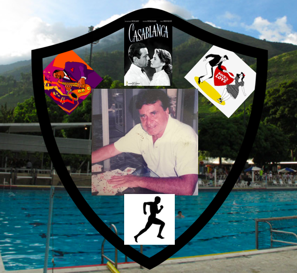

Desde que tengo noción de lo que pasa a mi alrededor, recuerdo a mi abuelo en Hebraica. Por eso coloqué la imagen del Club al fondo. Ahí es donde le gustaba estar, donde realizaba todas sus actividades, en especial la de jugar barajas, lo que hacía cada vez que podía. Por eso la fotografía que decidí mostrar de mi abuelo es la de él con un fajo de naipes sobre la mesa. Mi Abuelo Z”L era un hombre muy sencillo, disfrutaba la vida de manera simple. Por eso no recargue el escudo. Sin embargo, no podía dejar de colocar las cosas que el disfrutaba de verdad: le encantaba escuchar el Jazz, era un extraordinario bailarín de Rock and Roll y disfrutaba mucho ver películas viejas, en especial Casablanca. Abajo en el centro hay una imagen de un hombre trotando. Yo particularmente no conocí a mi abuelo en la época en la que trotaba, pero me contó mi abuela que él dedicaba mucho tiempo a este deporte, y por su gran habilidad ganó muchos premios en esta categoría.
|